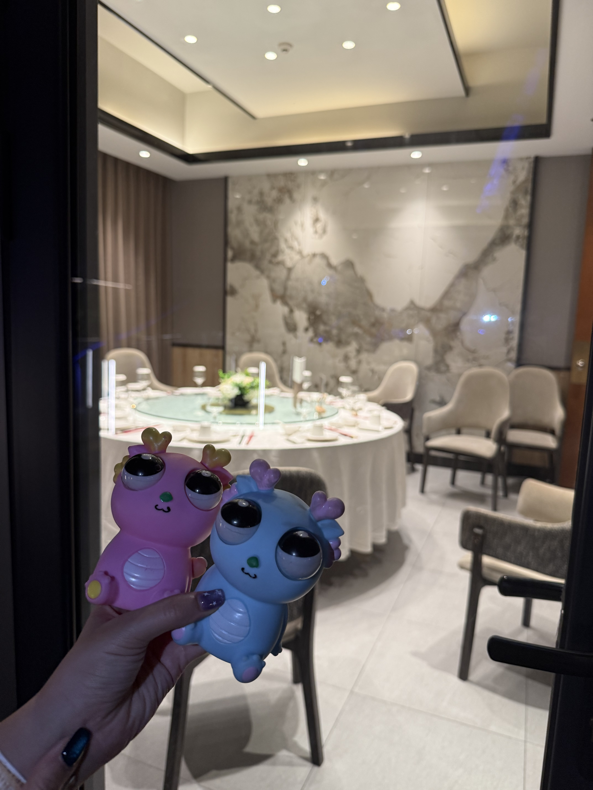
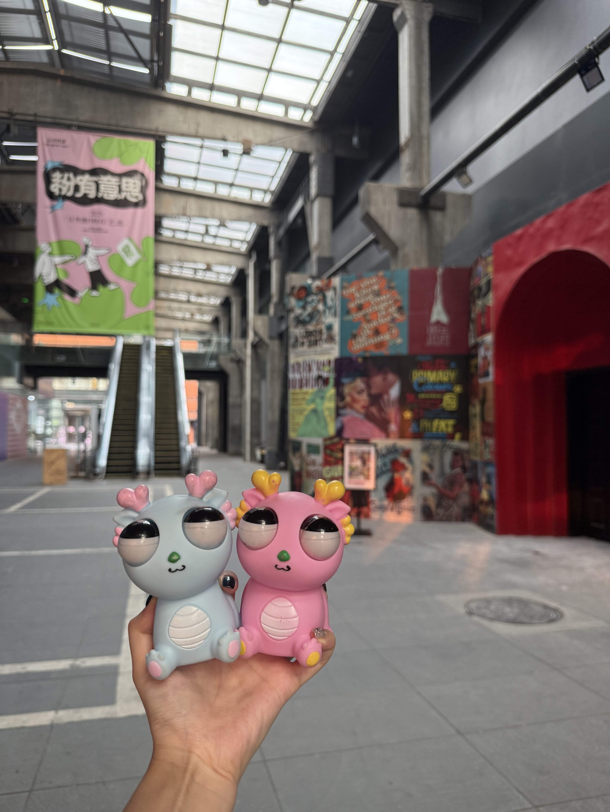
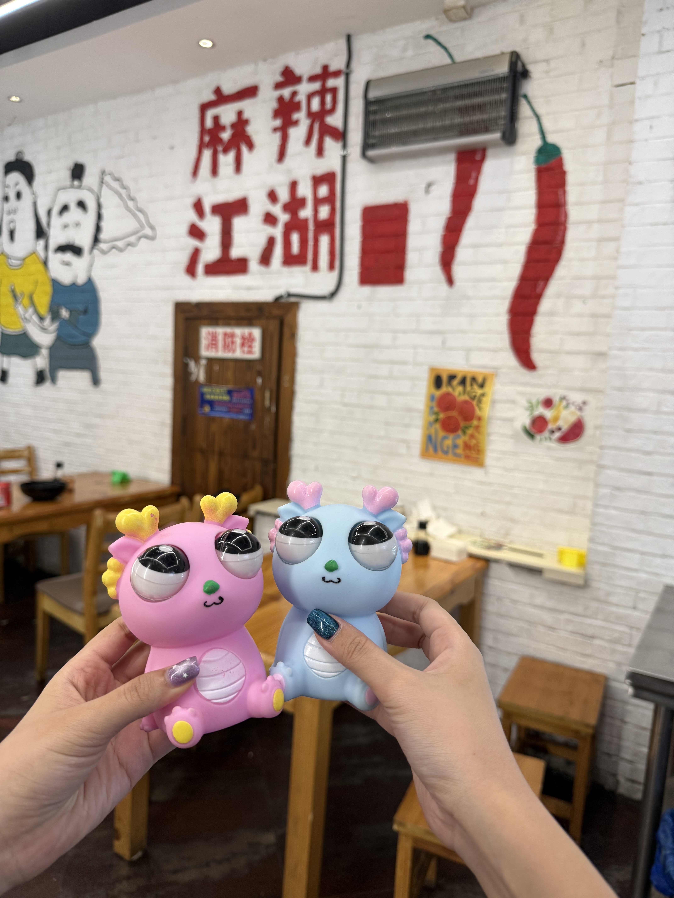
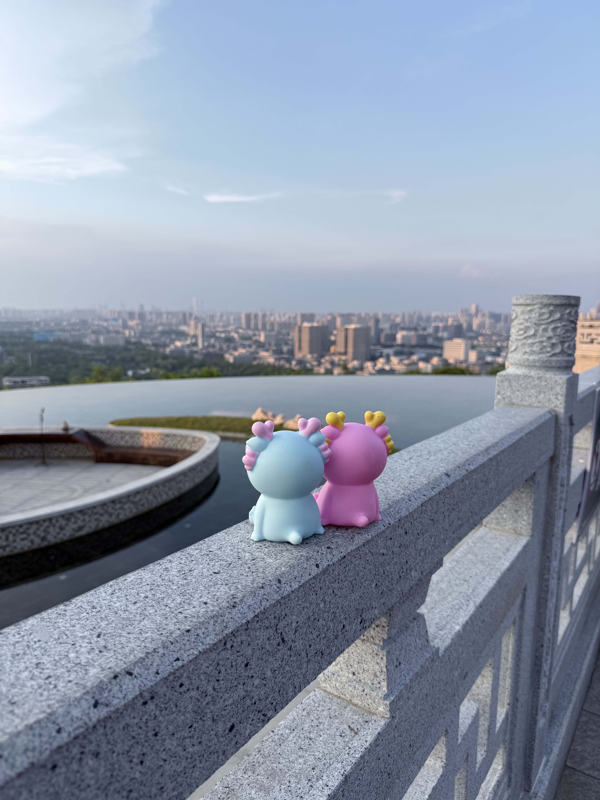
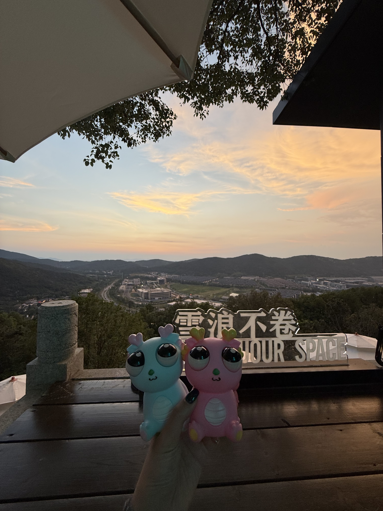
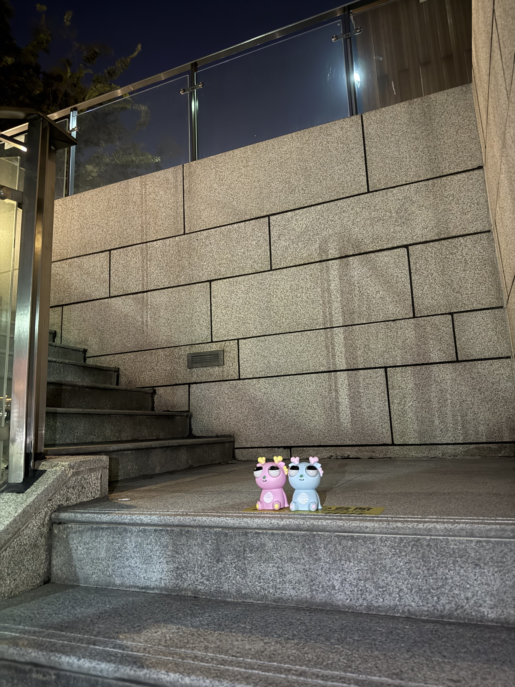


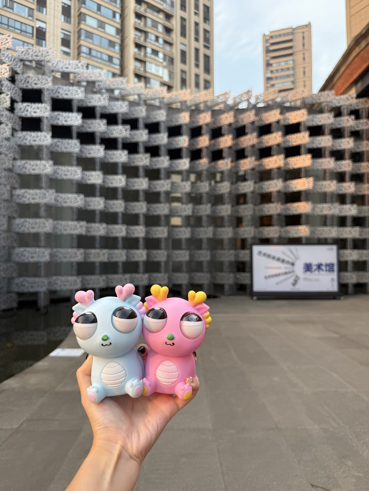
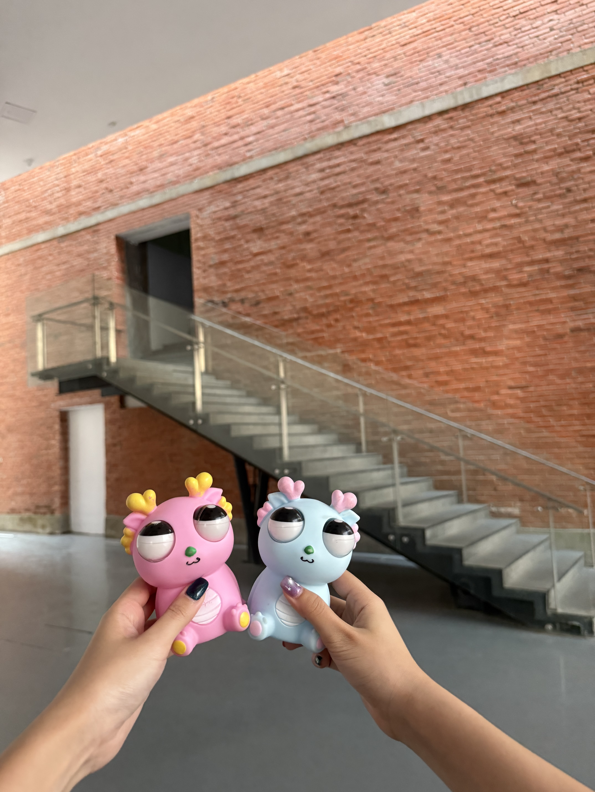

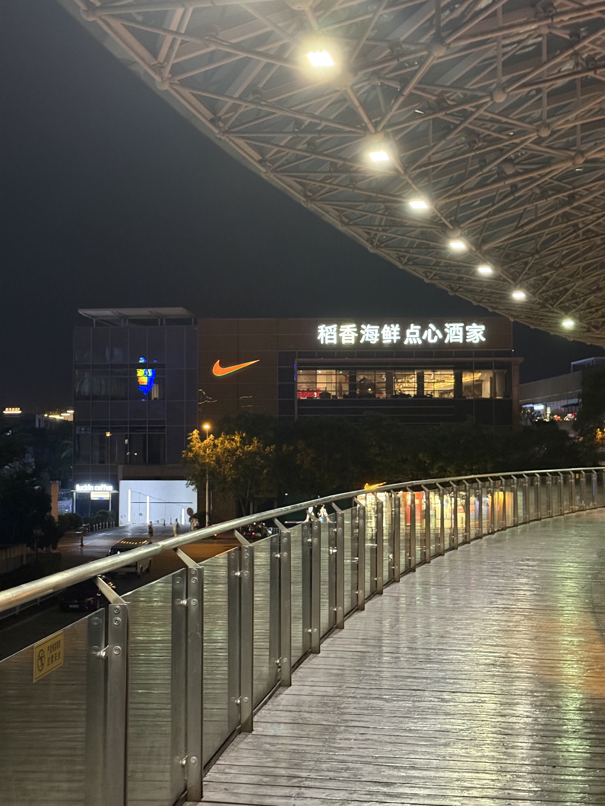
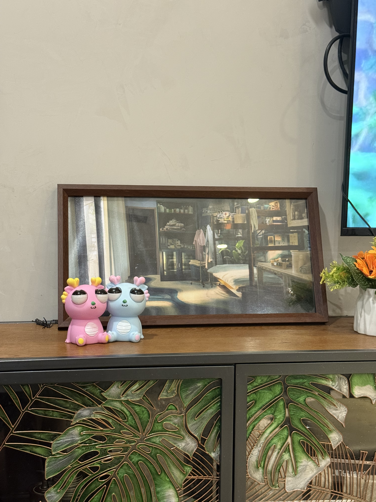
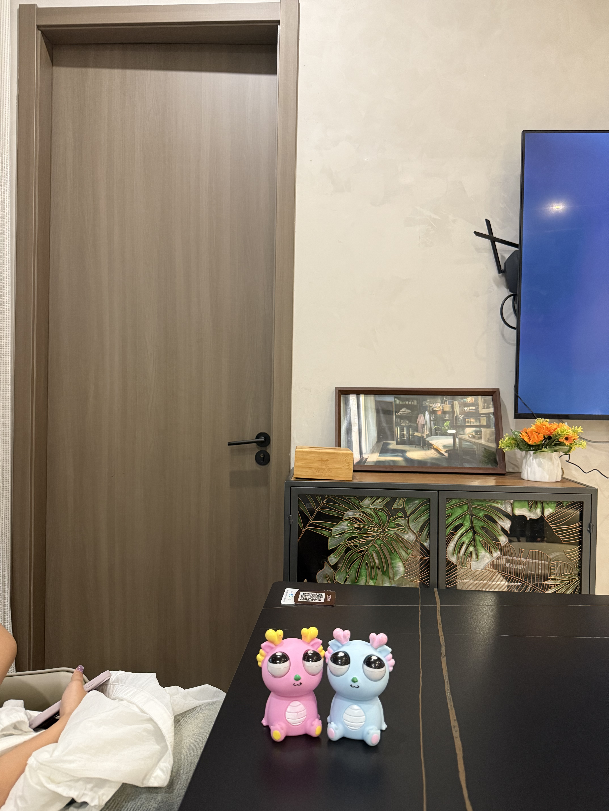


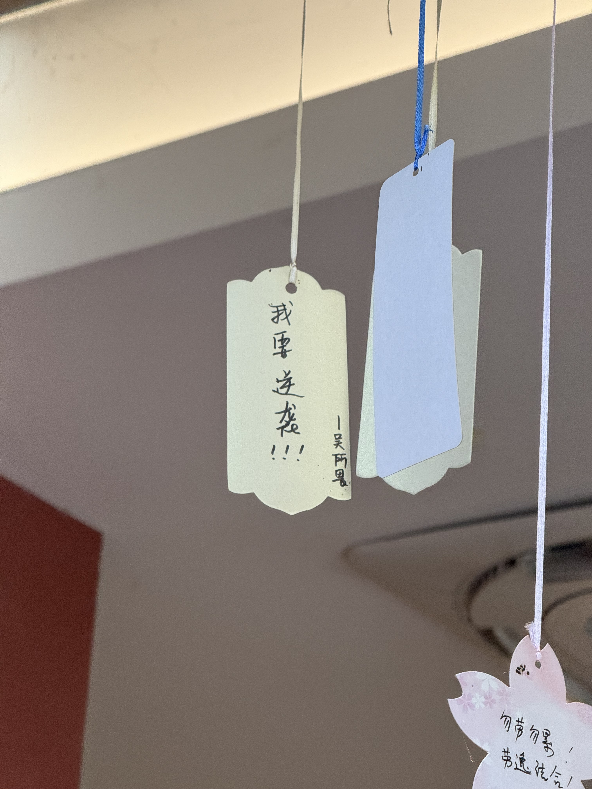

“In my memory, summers in Wuxi are scorching. At first, they felt only stifling and endless, yet still filled with anticipation. Gradually, I came to realize that the sunlight and rain held warmth and beauty within them. I slowly learned to fully embrace the moment. Whether last year or this year, summer has been wonderful—I will remember it forever!”